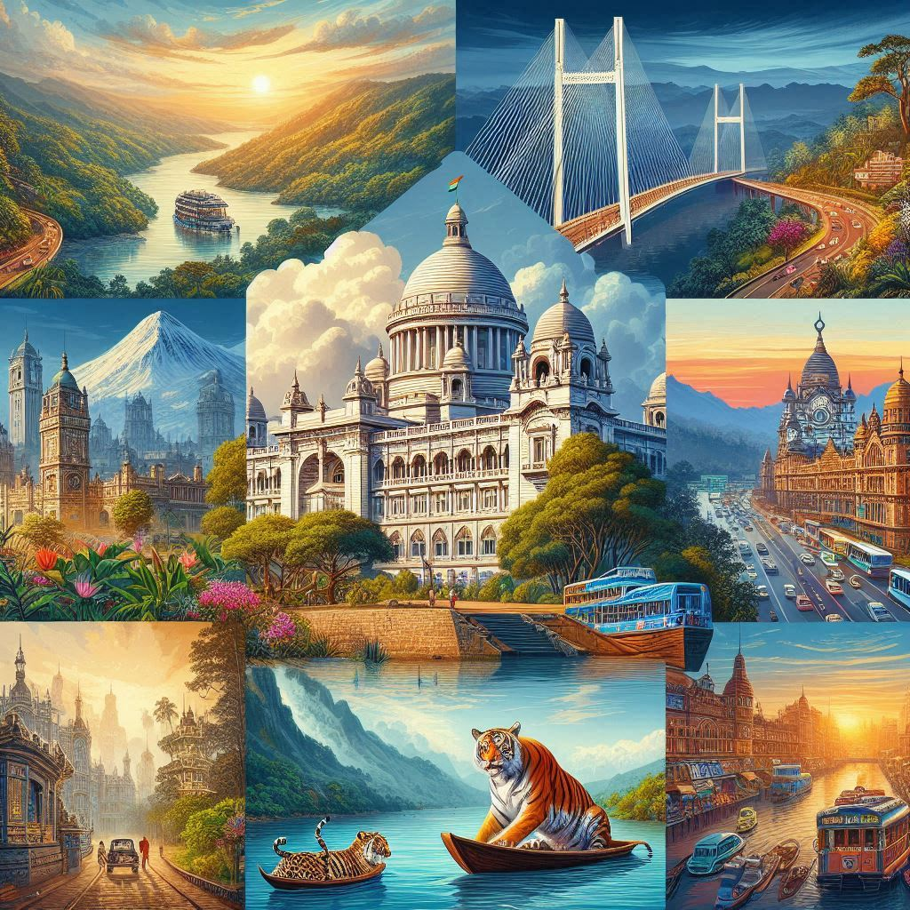
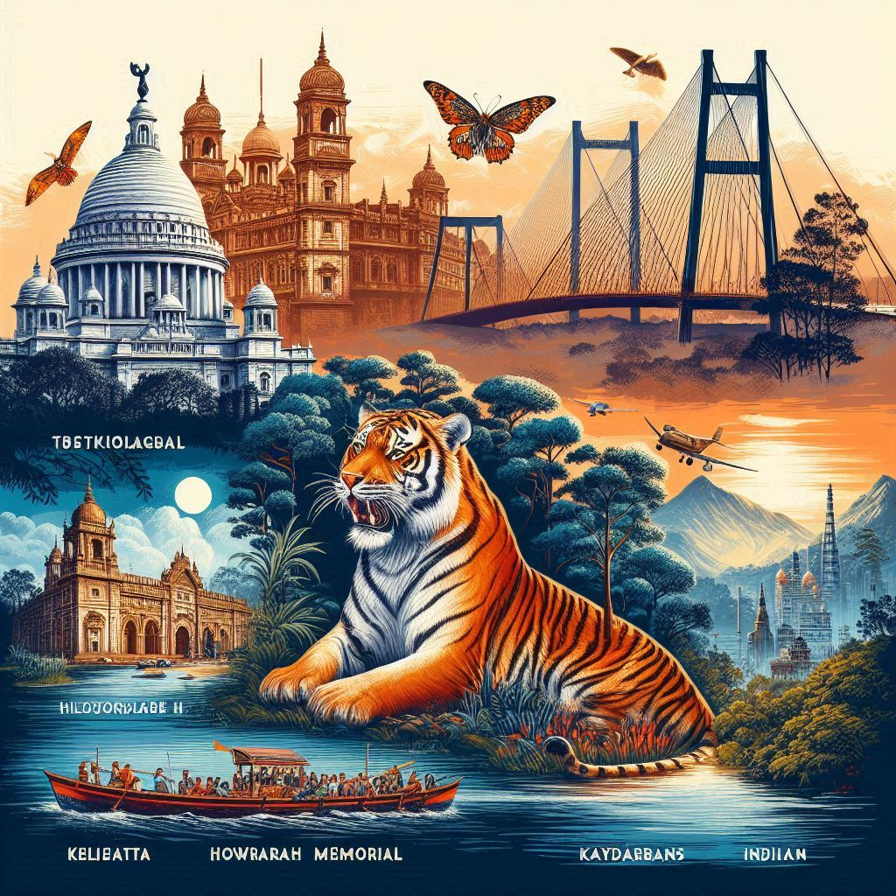

West Bengal is a state of diverse landscapes, rich cultural heritage, and historical significance, making it a popular destination for tourism. From the serene hills of Darjeeling to the bustling streets of Kolkata, the state offers a range of experiences for travelers. Below are some of the top tourist attractions in West Bengal:
1. Kolkata (Calcutta)
- Cultural Capital of India: Known as the "City of Joy," Kolkata is famous for its colonial architecture, vibrant arts scene, and rich history.
- Notable Attractions:
- Victoria Memorial: A magnificent white-marble structure built in memory of Queen Victoria, housing a museum and surrounded by lush gardens.
- Howrah Bridge: An iconic symbol of Kolkata, this cantilever bridge connects the city with its suburbs.
- Indian Museum: The oldest and largest museum in India, showcasing collections related to art, archaeology, and natural history.
- Dakshineswar Kali Temple: A famous Hindu temple dedicated to the goddess Kali, located on the banks of the Hooghly River.
- Eden Gardens: A historic cricket stadium known for hosting significant cricket matches and events.
2. Darjeeling
- The Queen of the Hills: Darjeeling is one of the most popular hill stations in India, known for its tea gardens, beautiful landscapes, and the Darjeeling Himalayan Railway, a UNESCO World Heritage site.
- Notable Attractions:
- Tiger Hill: Offers a spectacular view of the sunrise over the Kangchenjunga, the third-highest mountain in the world.
- Batasia Loop: A unique spiral railway track with stunning views of Darjeeling and surrounding areas.
- Himalayan Mountaineering Institute: Dedicated to mountaineering and the history of climbing expeditions in the Himalayas.
- Tea Gardens: Darjeeling's tea estates, where visitors can experience tea tasting and learn about tea production.
3. Sunderbans
- Sundarbans National Park: A UNESCO World Heritage site, the Sundarbans is the largest tidal halophytic mangrove forest in the world and home to the famous Royal Bengal Tiger.
- Wildlife and Ecosystem: The region offers a unique ecosystem with rich biodiversity, including species like crocodiles, dolphins, and various bird species.
- Boat Tours: Visitors can take boat rides through the dense mangrove forests to explore the wildlife and scenic beauty of the area.
4. Kalimpong
- A Tranquil Hill Station: Located in the Darjeeling Hills, Kalimpong is known for its quiet atmosphere, beautiful gardens, and Buddhist monasteries.
- Notable Attractions:
- Zang Dhok Palri Phodang Monastery: A serene Buddhist monastery with beautiful murals and a tranquil setting.
- Deolo Hill: The highest point in Kalimpong offering panoramic views of the surrounding area.
- Kalimpong Cactus Nursery: A popular spot for plant lovers, featuring a variety of cacti and succulents.
5. Santiniketan
- Home of Rabindranath Tagore: Santiniketan is the birthplace of Rabindranath Tagore, the Nobel laureate poet and philosopher. It is known for its cultural heritage and connection to art, music, and literature.
- Notable Attractions:
- Visva-Bharati University: Founded by Tagore, it is a center of learning and culture that attracts artists and scholars from around the world.
- Rabindra Bhavan Museum: A museum dedicated to the life and works of Rabindranath Tagore.
- Poush Mela: An annual fair held in December, celebrating the culture, arts, and traditions of Santiniketan.
6. Shantiniketan
- Educational and Cultural Center: Apart from Santiniketan, Shantiniketan is known for its serene environment, vibrant arts, and literature festivals. It is often associated with Tagore’s vision of education and creativity.
7. Murshidabad
- Historical Significance: Once the capital of Bengal, Murshidabad is home to several historical monuments, including palaces, mosques, and tombs.
- Notable Attractions:
- Hazarduari Palace: A grand palace with unique architecture that houses a museum with artifacts related to the history of Bengal.
- Imambara: A historical mosque with impressive architecture.
- Katra Mosque: An important landmark built by the Nawab of Bengal.


8. Cooch Behar
- Royal Legacy: Cooch Behar is known for its royal history, and the Cooch Behar Palace is a major attraction. The area also offers natural beauty and cultural experiences.
- Notable Attractions:
- Cooch Behar Palace: Built in European architectural style, the palace is a great example of royal grandeur.
- Madhupur Dighi: A serene pond surrounded by natural beauty.
9. Bishnupur
- Temple Town: Famous for its temples and terracotta art, Bishnupur is a cultural and religious hub.
- Notable Attractions:
- Jorebangla Temple: A beautiful terracotta temple.
- Rasmancha: A historic temple used for the annual Ras Mela festival.
- Bishnupur's Terracotta Temples: These intricate temples are known for their unique terracotta craftsmanship.
10. Digha
- Beach Destination: Digha is a popular seaside resort town on the Bay of Bengal, offering sandy beaches, water sports, and a tranquil atmosphere.
- Notable Attractions:
- Digha Beach: Known for its beautiful sandy beach, ideal for sunbathing and relaxation.
- Marine Aquarium: A popular spot to explore marine life and the underwater world.
Conclusion
West Bengal is a state that offers a rich blend of culture, history, and natural beauty. From the bustling streets of Kolkata to the tranquil hills of Darjeeling, the state has something for every traveler, making it one of the most desirable tourist destinations in India.